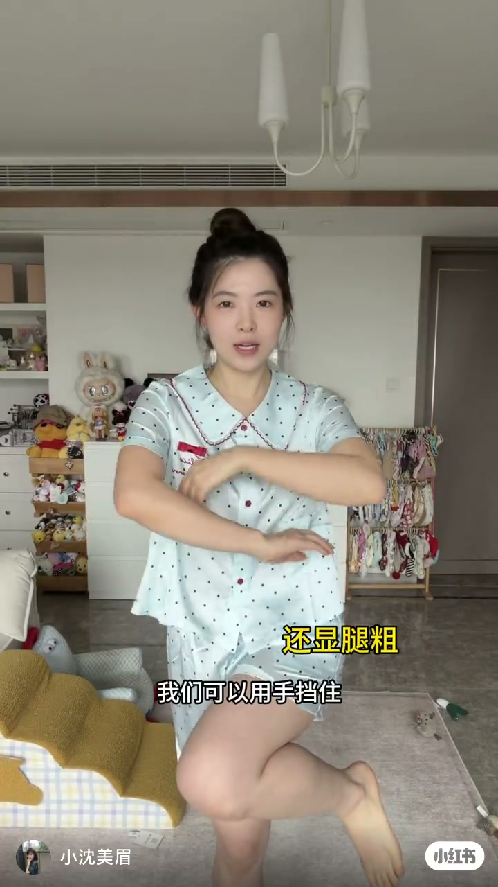
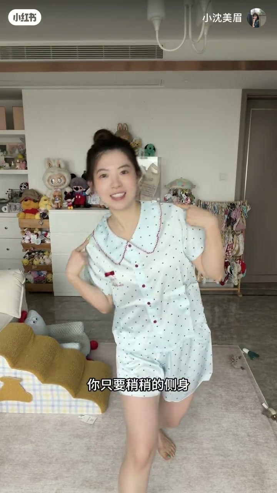
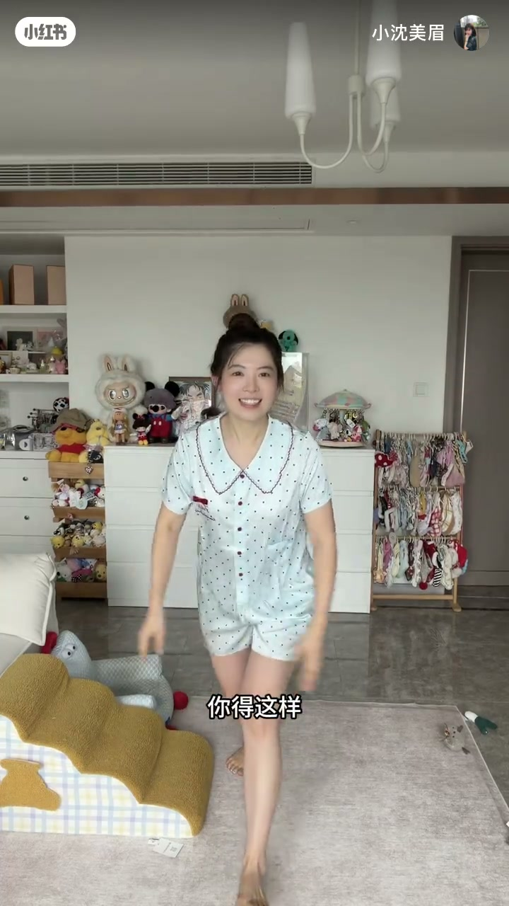
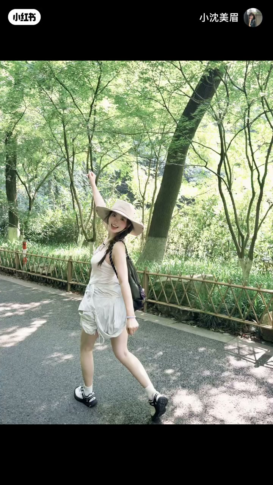

内容要点
一支 36 秒的公园/爬山拍照指南：先解决「顶胯挤出腰侧肉肉」的常见困扰，再给出扯包带、踢腿、抱树、大步走、大坐姿等「动起来」的姿势，目标是拍出有生命力、松弛自然的「活人感」照片。
知识结构
[00:00→00:08]
站姿细节：挡肉与高低肩
顶胯时用手挡住腰侧肉肉，配合高低肩打破对称，抬腿幅度不要太高，保持自然放松。
[00:08→00:16]
扯包带：户外出片动作
稍稍侧身、伸手扯住包带，借助道具和身体线条，就能得到「生命力·活人感」的照片。
[00:16→00:36]
动起来：四个放松动作
张开双手踢腿（幅度放开）、一整个抱住低矮的树、大步往前走时抓拍、坐姿动作幅度尽可能大。
总结
「活人感」的核心不是凹造型，而是与环境互动、让身体动起来——挡肉、扯包带、抱树、大步走都是让画面松弛自然的小道具。
00:00-00:08站姿细节：顶胯、挡肉与高低肩
00:00开场先解决一个常见困扰：顶胯拍照容易挤出腰侧的肉肉。博主的解决办法是——用手挡住那个位置，再配合高低肩打破对称，同时抬腿的幅度不要太高，保持自然放松。

[00:03] 顶胯时用手挡住腰侧，配合高低肩调整站姿
Cover the waist with your hand when posing, and add an uneven-shoulder stance.
00:08-00:16扯包带：户外出片动作
00:08进入公园或爬山场景，博主给出一个简单好记的动作：稍稍侧身，伸手扯住包带，就能得到「生命力·活人感」的照片——借助道具和身体线条，比干站自然得多。

[00:11] 侧身伸手扯住包带，展示户外活人感姿势
Twist sideways and reach for your bag strap for a lively outdoor shot.
00:16-00:36动起来：踢腿、抱树、走路、坐姿
00:16后面四个动作都围绕「动起来」展开：
00:16张开双手踢腿——演示了错误与正确两种幅度，动作放开才出效果。
00:21遇到低矮的树，可以一整个抱住，与环境产生互动。
00:25大步往前走的时候抓拍，制造自然的行走动态。
00:27坐姿则要求动作幅度尽可能大一点，避免缩成一团。

[00:19] 张开双手踢腿，动作幅度要放开
Open your arms and kick your leg wide — don't hold back.

[00:28] 坐姿动作幅度尽可能大一点
When seated, make your pose as big as possible.
「活人感」的核心不是凹造型，而是与环境互动、让身体动起来——挡肉、扯包带、抱树、大步走，都是让画面松弛自然的小道具。